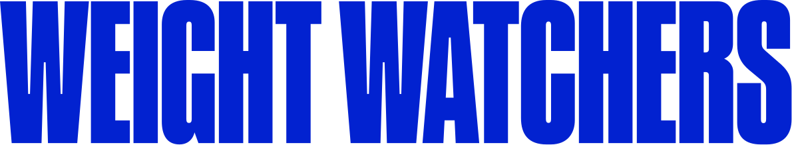

Prototypes
Product ideas I built
WeightWatchers Site Improvement Concepts An editorial and UX teardown: 63 findings across 9 pages, six proposed workstreams, and working mockups of the homepage, a blog article, and two new interactive experiences.